Maîtrisez les Mathématiques et la Physique-Chimie
Accédez à des cours complets, des exercices corrigés pas à pas et des examens nationaux interactifs adaptés au programme marocain.
Mathématiques
Analyse, Algèbre, Probabilités
Physique - Chimie
Ondes, Mécanique, Électricité, Chimie
Galerie des Animations & TP Virtuels
Explorez les principes fondamentaux de la Physique-Chimie et des Sciences de l'Ingénieur à travers nos simulations interactives.
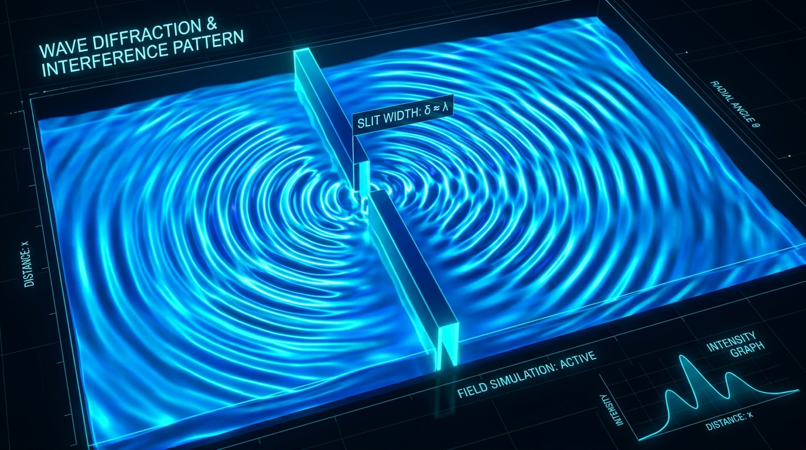
ThermodynamiqueTransfert de Chaleur : Conduction, Convection & Rayonnement
Étudiez la conduction (Fourier), la convection (Newton & cellules de fluides) et le rayonnement (Stefan-Boltzmann & Wien).
Gaz Parfait & Propriétés Microscopiques
Explorez la théorie cinétique des gaz, la pression cinétique, les chocs moléculaires et l'agitation thermique (PhET).
Transformations : Réversible, Irréversible & Quasistatique
Mettez en évidence la différence entre transformations quasistatiques, réversibles ($S_{créée} = 0$) et irréversibles ($S_{créée} > 0$, hystérésis $W_{perdu}$).
Ondes Progressives & Diffraction
Étudiez la propagation d'une onde sinusoïdale sur une corde vibrante et le phénomène de diffraction à travers une fente.
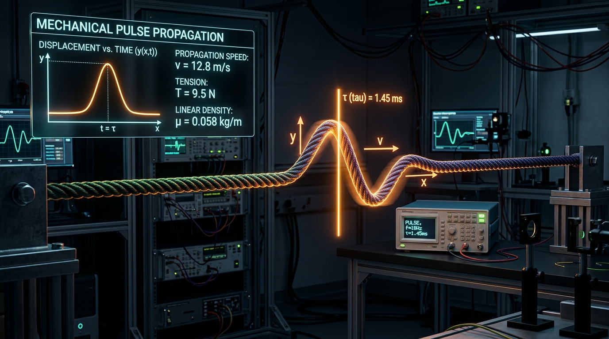
Optique & OndesRetard Temporel & Corde
Mesurez le retard temporel \(\tau\) lors de la propagation d'une onde mécanique entre deux capteurs.
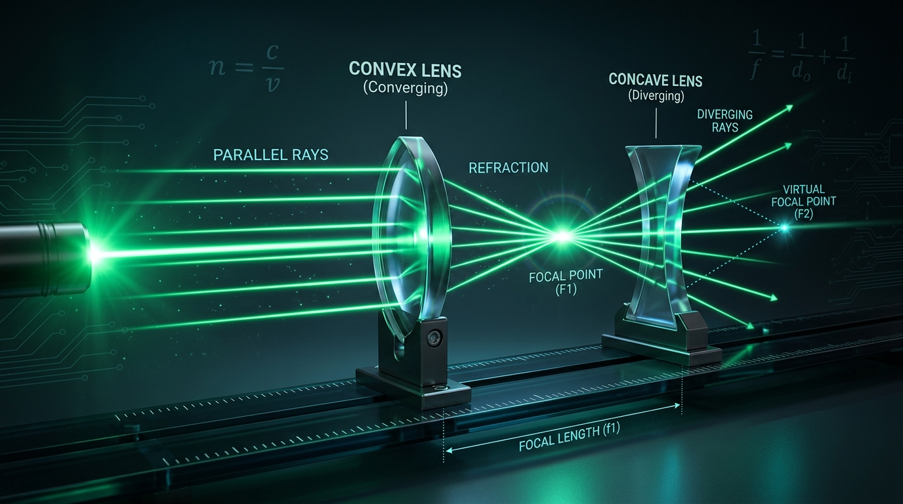
Optique & OndesFocométrie & Lentilles Minces
Déterminez la distance focale \(f'\) par les méthodes de Bessel, Silbermann, Autocollimation et Badal.
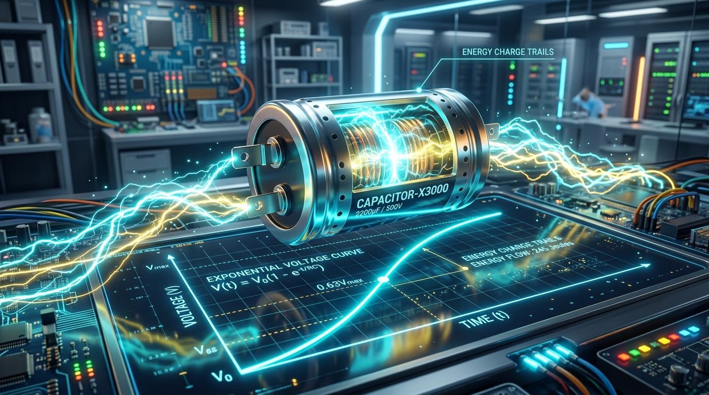
Électricité & RLCCharge & Décharge Condensateur (Dipôle RC)
Observez la courbe transitoire \(u_C(t)\) sur oscilloscope et déterminez la constante de temps \(\tau = R \cdot C\).
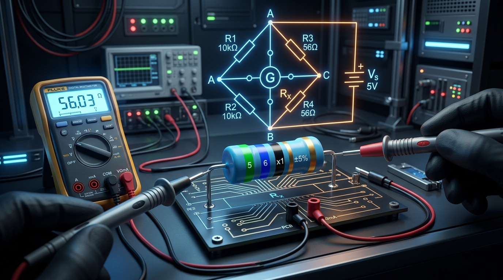
ÉlectricitéMesure de Résistances & Wheatstone
Déterminez la résistance par le code des anneaux de couleurs, comparez les montages Amont/Aval et équilibrez le Pont de Wheatstone.
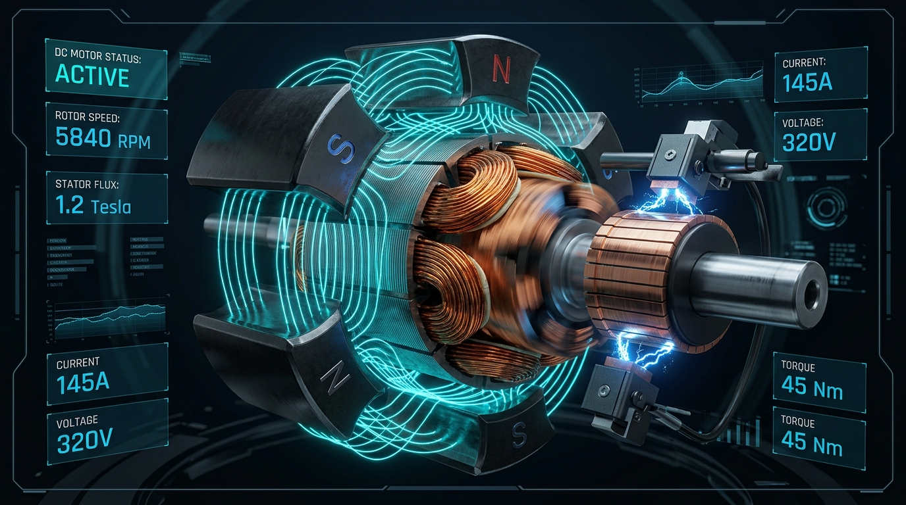
ÉlectrotechniqueMoteur à Courant Continu (MCC)
Visualisez la rotation 2D du rotor, les forces de Laplace \(F = I \cdot L \times B\), et tracez les caractéristiques \(N(U)\), \(T(I)\) et \(\eta\).
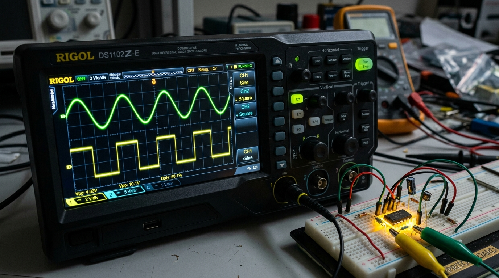
ÉlectroniqueAmplificateur Opérationnel (AOP)
Visualisez simultanément \(V_{in}(t)\) et \(V_{out}(t)\) sur oscilloscope parmi 8 montages (Inverseur, Suiveur, Sommateur, Comparateur...).
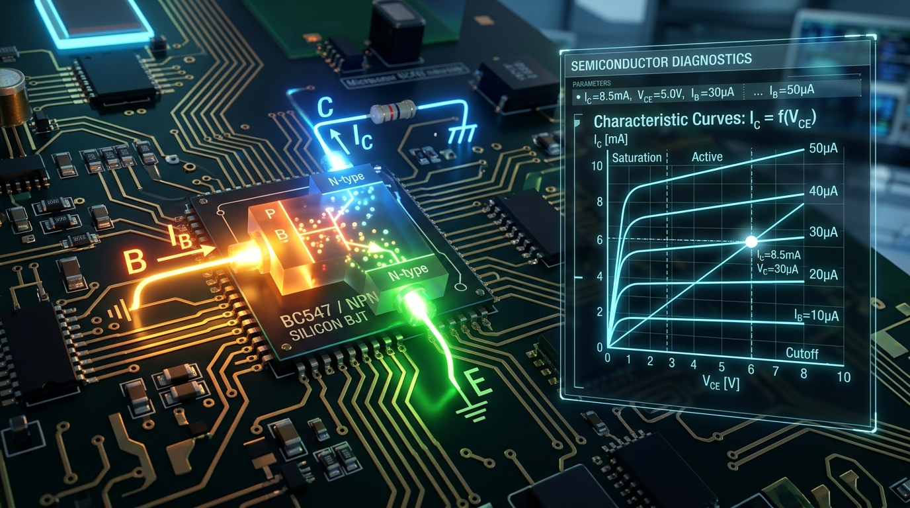
ÉlectroniqueTransistor Bipolaire (NPN)
Tracez les caractéristiques d'entrée \(I_B = f(V_{BE})\) et de sortie \(I_C = f(V_{CE})\) ainsi que la droite de charge statique.
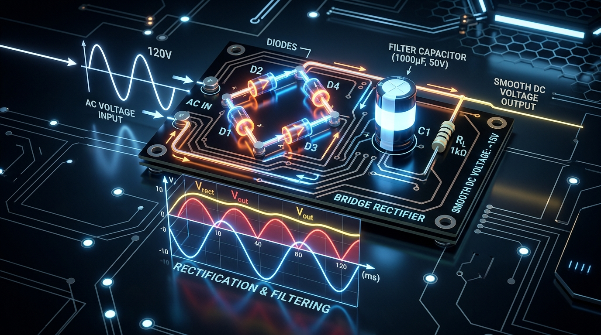
ÉlectroniqueDiodes & Redressement de Tension
Étudiez le redressement simple et double alternance (pont de Graetz) avec filtrage capacitif et mesure de la tension d'ondulation.
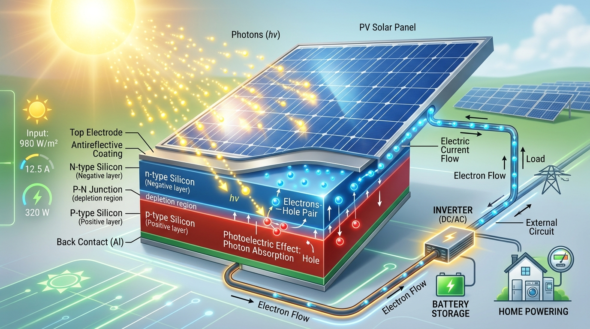
Physique ModerneCellule Photovoltaïque & Effet Photoélectrique
Tracez les caractéristiques courant-tension \(I(U)\) et puissance \(P(U)\) d'un panneau solaire sous éclairement variable.
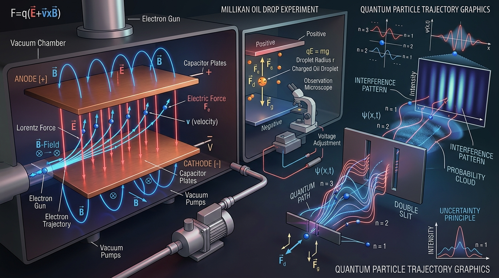
Physique ModerneCharge Spécifique de l'Électron \(e/m\)
Simulez la déviation des électrons dans des bobines de Helmholtz et mesurez le rapport charge/masse \(e/m\).
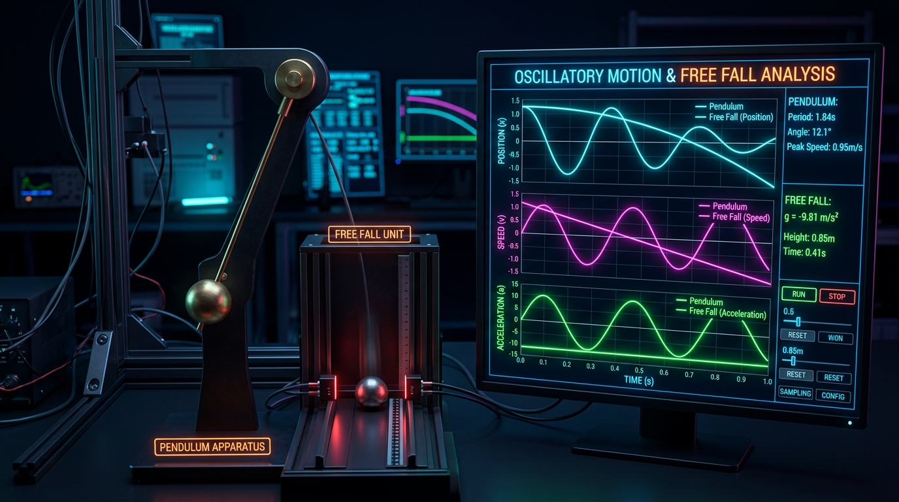
MathématiquesTraceur de Fonctions Mathématiques
Tracez les fonctions mathématiques et les équations horaires du mouvement (position, vitesse, accélération).
Chapitres de Mathématiques — 2ème Bac PC & SVT
Retrouvez tous les chapitres conformes au programme officiel du Baccalauréat marocain (Sciences Physiques & SVT), avec résumés de cours, exercices corrigés et examens nationaux.
Chapitres de Physique-Chimie — 2ème Bac PC & SVT
Retrouvez tous les chapitres de Physique-Chimie conformes au programme officiel du Baccalauréat marocain (Sciences Physiques & SVT), avec résumés de cours, exercices corrigés et examens nationaux.
Titre du Chapitre
Galerie des Animations & TP Virtuels
Explorez les principes fondamentaux de la Physique-Chimie et des Sciences de l'Ingénieur à travers nos simulations interactives.
Thermodynamique & Cycles Thermiques
Explorez les cycles de Carnot, Otto et Diesel, les diagrammes \(P-V\) & \(T-S\), le rendement \(\eta\) et le mouvement du piston.
Transfert de Chaleur : Conduction, Convection & Rayonnement
Étudiez la conduction (Fourier), la convection (Newton & cellules de fluides) et le rayonnement (Stefan-Boltzmann & Wien).
Gaz Parfait & Propriétés Microscopiques
Explorez la théorie cinétique des gaz, la pression cinétique, les chocs moléculaires et l'agitation thermique (PhET).
Transformations : Réversible, Irréversible & Quasistatique
Mettez en évidence la différence entre transformations quasistatiques, réversibles ($S_{créée} = 0$) et irréversibles ($S_{créée} > 0$, hystérésis $W_{perdu}$).
Ondes Progressives & Diffraction
Étudiez la propagation d'une onde sinusoïdale sur une corde vibrante et le phénomène de diffraction à travers une fente.
Retard Temporel & Corde
Mesurez le retard temporel \(\tau\) lors de la propagation d'une onde mécanique entre deux capteurs.
Focométrie & Lentilles Minces
Déterminez la distance focale \(f'\) par les méthodes de Bessel, Silbermann, Autocollimation et Badal.
Charge & Décharge Condensateur (Dipôle RC)
Observez la courbe transitoire \(u_C(t)\) sur oscilloscope et déterminez la constante de temps \(\tau = R \cdot C\).
Mesure de Résistances & Wheatstone
Déterminez la résistance par le code des anneaux de couleurs, comparez les montages Amont/Aval et équilibrez le Pont de Wheatstone.
Moteur à Courant Continu (MCC)
Visualisez la rotation 2D du rotor, les forces de Laplace \(F = I \cdot L \times B\), et tracez les caractéristiques \(N(U)\), \(T(I)\) et \(\eta\).
Amplificateur Opérationnel (AOP)
Visualisez simultanément \(V_{in}(t)\) et \(V_{out}(t)\) sur oscilloscope parmi 8 montages (Inverseur, Suiveur, Sommateur, Comparateur...).
Transistor Bipolaire (NPN)
Tracez les caractéristiques d'entrée \(I_B = f(V_{BE})\) et de sortie \(I_C = f(V_{CE})\) ainsi que la droite de charge statique.
Diodes & Redressement de Tension
Étudiez le redressement simple et double alternance (pont de Graetz) avec filtrage capacitif et mesure de la tension d'ondulation.
Cellule Photovoltaïque & Effet Photoélectrique
Tracez les caractéristiques courant-tension \(I(U)\) et puissance \(P(U)\) d'un panneau solaire sous éclairement variable.
Charge Spécifique de l'Électron \(e/m\)
Simulez la déviation des électrons dans des bobines de Helmholtz et mesurez le rapport charge/masse \(e/m\).
Traceur de Fonctions Mathématiques
Tracez les fonctions mathématiques et les équations horaires du mouvement (position, vitesse, accélération).